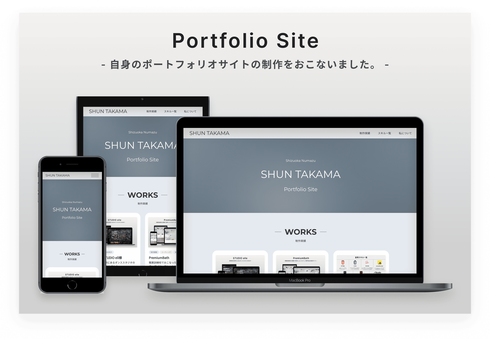
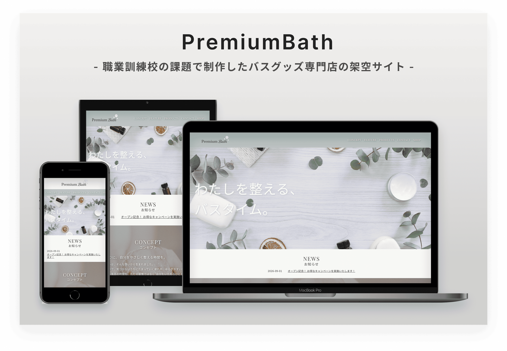

- 実案件
- コーディング
ポートフォリオサイト
自身のポートフォリオサイト制作をおこないました。
Works

職業訓練校「Webデザイン科」でおこなった実務を想定した制作課題。 ヒアリングシートをもとに情報整理、ワイヤーフレームの作成、コーディングの一連の流れを学びました。 要望をしっかりと反映しながら店舗の特徴や雰囲気が伝わるよう意識しながら取り組みました。
About
Point
お客様情報が記載されたヒアリングシートをもとに要望などサイト構成に重要となる情報を整理し、デザインコンセプトや主要カラーを設定。
その後、ワイヤーフレームを作成したうえでコーディングをおこないました。
また、Webサイトの訴求力を高められるようペルソナをしっかりと設定し、ターゲットに合わせて制作に取り組みました。
制作では、クライアント要望をしっかりと反映しつつ、店舗の特徴などが伝わるような設計を意識しました。
トップページでは店舗の想いやコンセプトを中心に構成し、初めて訪れたユーザーにもPremiumBathの魅力が伝わるよう意識しました。
一方で、お知らせや商品詳細など情報量が多くなりやすいコンテンツについては下層ページへ整理することで、必要な情報へ迷わずアクセスできるサイト構成を目指しています。
情報を詰め込み過ぎるのではなく、ユーザーがストレスなく閲覧できる導線設計と情報設計を意識して制作をおこないました。
お風呂のイメージから清潔感を感じられるグリーンブルーと白をメインカラーに設定しました。
また、「PremiumBathの商品を通じて1日の疲れを癒してほしい」というコンセプトから、ベースカラーには落ち着きのある薄いベージュを採用しています。
さらに、メインターゲットを20代後半〜30代の女性に設定していることから、アクセントカラーには淡いピンクを使用し、女性らしさや親しみやすさを表現しました。
ターゲット層やブランドイメージに合わせて、配色全体に統一感を持たせることを意識しています。